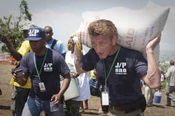
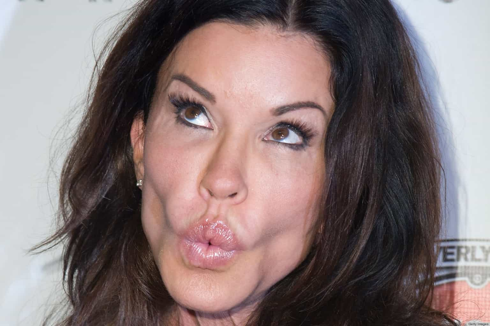

< < < Back
How Much Money Will Lena Dunham Make From Her Rape Accusation? – Return Of Kings
I’m an unreliable narrator.
– Lena Dunham in the chapter “Barry” from Not That Kind of Girl
Now that the dust has settled (or has it?) on Lena Dunham’s putrid 2014 “memoir,” Not That Kind of Girl, it’s time to ask the literally million-dollar question: how much money will she make from her unsubstantiated rape accusation? And how much has she made already from the heightened interest surrounding her celebrity profile?
The Girls creator’s allegations, and the factual controversies that followed, spawned hundreds of mainstream media articles and lured in potentially millions of curious ears and eyes. Despite the deserved criticism she faced, all these articles, positive and negative, must be construed in an overall context: attention means money for celebrities.
As you may be aware, Dunham claimed she was raped by moustachioed, Republican “Barry” whilst attending Oberlin College. The problem is, “Barry” wasn’t actually a Barry. And, surprise, surprise, there was an innocent Barry who matched the description of the “Barry” Dunham said raped her. And this real Barry went through a figurative but still extremely painful hell, his reputation tarnished via Dunham’s catastrophically described, poorly thought-out and pathetically “fact-checked” narcissistic “literary” indulgence.
Early on, with these scarce details, we can safely divine that the story was more about capturing the eye of the public than any allegiance to facts, responsibility and preventing collateral damage to third parties. And, sensing her acute vulnerability if even the purported rapist “Barry” refuted the accusation and its lack of evidence, Dunham opted for internally contradictory statements about what exactly she was asserting:
I describe a sexual encounter with a mustachioed campus Republican as the upsetting but educational choice of a girl who was new to sex when, in fact, it didn’t feel like a choice at all.
– Lena Dunham’s confusing doublespeak (is she claiming or not claiming to have been raped?), in a part of her memoir prior to the chapter “Barry”
Attention equals money for all celebrities

Looks completely sincere and not done for the cameras, right, Sean?
Anytime a celebrity garners attention, money flows to them, both at that moment and in the opportunities that come afterwards. Lena Dunham is no different. It also explains why you find celebrities such as Angelina Jolie doing charity or rape advocacy work where their own person is front and center of the particular campaign. Or Sean Penn “rescuing” people in the aftermath of Hurricane Katrina (with a camera crew in tow) and distributing blankets and relief packages to flood victims in Pakistan.
Sometimes the exact level of attention expected or wanted by a celebrity doesn’t eventuate. And perhaps when the attention directed back to them is sufficient, the financial windfall may not be as lucrative as desired. But frequently it exceeds what was anticipated.
Lena Dunham may soon see that happen with her rape accusation. Girls won’t go on forever (thank you, Jesus) and there’s only so much feminist horse-flogging that can take place in serial dramas. Enter the memoir format of Not That Kind of Girl, where Dunham was granted much more scope to politicize and brand herself in an economically extravagant fashion. The original book deal, struck in 2012, was worth north of $3.5 million.
Throwing the innocent Barry under the bus for her own fame

Shocking with dresses or rape accusations that back-pedal within the same book achieves the same end: gaining attention.
It took Lena Dunham an eternity to address whether the Oberlin Barry identified by many was, in fact, the man she accused (or didn’t accuse?) of rape in her memoir. The apology that she finally gave Barry was self-serving, disingenuous and beyond woefully late. Simultaneously, it fits in with the general picture of someone who made the accusation in the book to stack up the sort of attention-grabbing headlines that translate to more riches and admiration from others. Book sales only increased due to the “sauciness” of the “Barry” scandal.
It would have been clear to an individual with the awareness and moral conscience of a Pol Pot that once someone had been confused for “Barry”, the unjustified embarrassment, scrutiny and panic for that person would have bordered on heart attack-producing. Not that that mattered terribly much to Dunham, as was shown by her untenable delay in issuing a response. To add insult to injury for the blameless Barry, her mea culpa to him came through the wonderfully serious and reputable medium of a Buzzfeed essay. Go figure.
Always count the dollars and other benefits for celebrity rape accusers

Janice Dickinson had experienced massive financial problems prior to her allegations against Bill Cosby.
In trying to “resolve” the “Barry” debacle, Dunham said she changed the name of her “attacker” to “protect him.” Aside from this being an immediate, additional red flag about the veracity of her underlying account, it underscores, again, the opportunistic nature of the situation as a vehicle for her own self-promotion, wealth, and fame. By positioning herself, as she has voraciously tried to, as a “sexual assault on campus advocate,” Dunham will generate even more income than before. The “1-in-5” myth and its attendant hysteria sells, that’s for sure.
Like Emma Sulkowicz, whose catatonic “rape sex tape” I covered recently, “the voice of her generation” has been able to weave a hazy, unproven story into a personal narrative amenable to great career and social advancement, all without a court of law to properly validate it. Consciously or unconsciously, other women, including the historic coke-head, washed up supermodel and discarded TV presenter Janice Dickinson, have realized the power and attention that comes with “coming forward” well after their star power has faded.
SJWs will grant the makers of unverifiable rape accusations all the secular sainthood in the world. This must be challenged. Rape accusations are not only too easily believed in our dogmatically anti-due process societies, they come with a host of privileges, no matter how far-fetched they are or how long it takes for them to be made.
As the real, innocent Barry learned, badly written fiction is usually the better story for feminists.
Read More: Lena Dunham And The Hollowness Of Millennial Girls